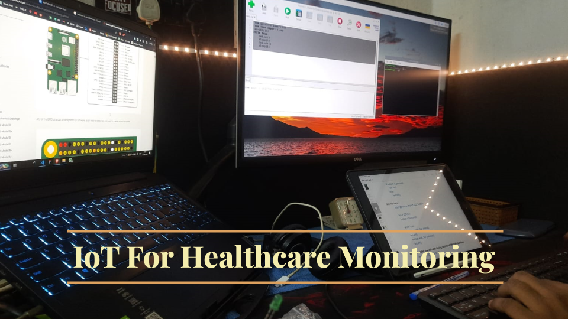

IoT for healthcare monitoring
"IoT for Healthcare Monitoring is a transformative solution that melds state-of-the-art hardware and software. This innovative approach leverages the power of Arduino and Raspberry Pi, versatile microcontroller platforms, along with Bluetooth, Serial, and HTTPS protocols to enable seamless data exchange."
Requirements
-
Apparatus:
- Arduino compatible microcontroller
- HC05 Bluetooth Module
- TMP36 IC
- USB 2 wire
- Laptop/PC/Raspberry Pi
- Jumper Wires
- Bread Board
-
Software:
- Arduino IDE
- Python
-
Modules:
- Pandas Module
- NumPy Module
- Serial Module
- Time Module
Theory
Internet of Things (IoT): - IoT refers to a network of interconnected physical objects or "things" embedded with sensors, software, and other technologies that enable them to collect, exchange, and transmit data over the internet. (Internet here always does not mean the web; it simply means the interconnected network of things.) The primary goal of IoT is to enable these objects to communicate, interact, and provide value by sharing information and performing tasks autonomously or with minimal human intervention.

IoT Components
- Sensor: Sensors are devices that gather data from the physical world. They detect changes in their environment and convert these changes into electrical signals. E.g., Temperature sensors, motion detectors, heart rate monitors.
- Actuator: Actuators are devices that take signals from the IoT system and perform physical actions in the real world based on those signals. E.g., Motors, servos, solenoids, and relays.
- Controller: Controllers, often microcontrollers or microprocessors, are the "brains" of IoT devices. They process data, execute algorithms, and control the behavior of the device. E.g., Arduino boards, Raspberry Pi, ESP8266.
- Communication Gateway: Gateways facilitate communication between IoT devices and the internet or other devices. They often bridge different communication protocols. E.g., IoT routers, Serial COM, Bluetooth.
- Data Storage: Data storage components store the data collected by sensors for later analysis or retrieval. This data can be stored locally or in the cloud. E.g., Local databases, cloud storage services.
- Processor: Processors analyze the data collected by sensors, making sense of it and often making decisions or predictions based on algorithms. E.g., CPUs, GPUs, specialized AI processors.
- User Input: User input refers to data or commands provided by users to the IoT system. This input can configure settings or trigger specific actions. E.g., Buttons, touchscreens, voice commands.
- User Output: User output components provide information or feedback from the IoT system to users. This can include notifications, displays, or auditory signals. E.g., LEDs, displays, speakers.
Bluetooth:
Bluetooth is a wireless communication technology that allows electronic devices to exchange data over short distances. It was developed to replace traditional wired connections, such as USB cables, for connecting devices like smartphones, headphones, keyboards, and more. Bluetooth technology uses radio waves in the 2.4 GHz ISM (Industrial, Scientific, and Medical) band to establish connections between devices. It provides a communication protocol to commute between the controller and processor.
Arduino:
Arduino is an open-source hardware and software platform designed for building and prototyping a wide range of electronic projects. It provides a simple and accessible way for individuals, including hobbyists, students, and professionals, to create interactive and programmable electronic devices. The core components of the Arduino platform include Arduino Boards, Arduino Integrated Development Environment (IDE), etc. It is a controller which reads data from the sensor and converts it to digital data and sends it to the processing unit.
Procedure:
- Connect the TMP36 to the Arduino as shown below and connect the Vout Pin of the IC to the A0 pin.
- Connect the Bluetooth Module HC-05 to the Arduino as shown in the diagram below. Make sure the TX and RX pins of the module are connected to the RX and TX pins of Arduino respectively.
- Power up the Arduino using the USB 2.0 cable and use a laptop/PC/Raspberry Pi as per your convenience to first code the Arduino-compatible board and use it as a storage, processing, and visualizing device.
- Now open the Arduino IDE and code for obtaining the data from the sensor.
- Now we will use the Serial COM port to push the data from the microcontroller to the laptop/PC/Raspberry Pi.
- Here we have 2 options to send data to the processor:
- Wired USB
- Wireless Bluetooth
- Now open Code Editor and write a python code to obtain data from the serial port and display it on the CLI (command-line interface) and then store it as a CSV.
- Now to visualize the data, we will use Google Spreadsheet or MS Excel.
- There can be variations in the processes from here depending on showing or storing the data and usage of the available communication medium.
- Once the code is written on the Arduino-compatible board, we can unplug the board from the processing device and use another power source to run the board in case of Bluetooth mode of communication.
- datapoints = (time in minutes × 60 × time delay in milliseconds) / 1000
Code
Arduino Code
// Define the analog pin, the TMP36's Vout pin is connected to
#define sensorPin A0
void setup() {
// Begin serial communication at 9600 baud rate
Serial.begin(9600);
}
void loop() {
// Get the voltage reading from the TMP36
int reading = analogRead(sensorPin);
// Convert that reading into voltage
float voltage = reading * (5.0 / 1024.0);
// Convert the voltage into the temperature in Celsius
float temperatureC = voltage * 100;
// Print the temperature in Celsius
Serial.println(temperatureC);
delay(1000); // wait a 10 miliseconds between readings
}
Python Code (Live Temperature)
import time
# pip install pyserial
import serial
import serial.tools.list_ports
# Get a list of available serial ports
available_ports = list(serial.tools.list_ports.comports())
# once obtaining available port
for port in available_ports:
# we store the data into variable
# baud rate should match the serial baudrate ie. 9600
ard_data=serial.Serial(port.device,9600)
# waiting 1 Sec for the communication to start
time.sleep(1)
while True:
while(ard_data.inWaiting()==0):
pass
data=ard_data.readline()
data=str(data,'utf-8')
data=data.strip('\r\n')
data=float(data)
print(data)
Python Code (Record Temperature)
import time
import serial
import pandas as pd
import numpy as np
import serial.tools.list_ports
name=input("Name of the Patient:- ")
# Get a list of available serial ports
available_ports = list(serial.tools.list_ports.comports())
#initializing a numpy array to store 10000 temperature data points
data_array=np.zeros(10)
t=0
# begins the counter
t1=time.time()
# once obtaining available port
for port in available_ports:
# we store the data into variable
# baud rate should match the serial baudrate ie. 9600
ard_data=serial.Serial(port.device,9600)
time.sleep(1)
#seting the loop for 10 times
while t<10:
while(ard_data.inWaiting()==0):
pass
#processing the data from serial port and converting it to integer
data=ard_data.readline()
data=str(data,'utf-8')
data=data.strip('\r\n')
data=float(data)
print(data)
data_array[t]=data
t=t+1
# ending the counter
t2=time.time()
print(t2-t1)
print("Collected")
print(data_array)
# making a data frame to hold the numpy data
df = pd.DataFrame(data_array)
# converting the dataframe to csv file
df.to_csv(name +'.csv')
print('Thank You')
Observation
- Using the python code for live data, we obtained the live temperature of the patient.
- Using the python code for storing data, we recorded the live temperature for 10 Seconds.
- Using the Same code, we can store the data of any desired amount of time using the simple calculation given below.
- datapoints = (time in minutes × 60 × time delay in milliseconds) / 1000

Conclusion
- After doing the experiment we can use sensor to obtain data and use microcontroller to send the data to the processing unit for storing, processing, and visualising the data.
- We can use different sensors to obtain various data regarding the patient in medical use of this.
- The data we stored in CSV format can be visualised using Excel or Google Sheet
- We can use different other modules of python to visualize the live data.
Discussion
- This simple demonstration of IoT in Healthcare monitoring can be extended to making apps and storing the data on cloud and processing it.
- In the further experiments we will make mobile apps and display and process data obtained in the cloud.
- We can use other important sensors like Heart Rate Sensor, SPO2 Sensor, etc. to properly moniter the patient.
- Here with data comes proper data handeling as medical data can be missused.